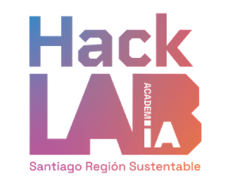

AcademIA HackLab: Santiago Región Sustentable
Inteligencia Artificial en Acción para la Transformación Sustentable del Territorio
Introducción

El programa
AcademIA HackLab: Santiago Región Sustentable es un programa de formación aplicada cuyo objetivo es acelerar y escalar la acción climática en la Región Metropolitana de Santiago, utilizando la Inteligencia Artificial (IA) y la ciencia ciudadana para la transformación sustentable de espacios públicos, barrios y comunidades.
El curso convoca a 80 participantes organizados en 20 equipos de 4 personas, provenientes principalmente del sector público (municipios, gobierno regional, servicios), además de organizaciones de la sociedad civil y el sector privado. Los equipos trabajan sobre problemáticas territoriales reales de sus propias comunas, culminando con la presentación de una hoja de ruta de aplicación de IA en sus organizaciones.
Este documento reúne los contenidos de las siete sesiones a cargo de Denis Berroeta (UAI), que recorren el camino completo desde aprender a “hablar con la máquina” hasta producir evidencia territorial integrada para la toma de decisiones.
Docente
Profesor: Denis Berroeta
Contacto: denis.berroeta@uai.cl · https://www.linkedin.com/in/denis-berroeta/
Denis Berroeta es magíster en Inteligencia Artificial por la Universidad Adolfo Ibáñez, máster en Data Science y actualmente cursa un PhD en Data Science. Se desempeña como Coordinador de Investigación del Centro de Inteligencia Territorial de la Universidad Adolfo Ibáñez.
Su trayectoria se ha desarrollado en el modelamiento y análisis de datos espaciales, participando en proyectos de investigación públicos y privados vinculados al CIT. En ese rol ha diseñado, coordinado y gestionado la implementación de metodologías de análisis de datos territoriales para apoyar procesos de diagnóstico, planificación y toma de decisiones.
Cuenta además con experiencia docente en geoestadística, análisis criminal, análisis de imágenes satelitales para el monitoreo ambiental y ciencia de datos.
¿Para quién es este libro?
El diseño de estos contenidos asume explícitamente el siguiente perfil de participante:
- Profesionales del mundo público: planificadores, gestores territoriales, encargados de medio ambiente, SECPLA, DIDECO, profesionales de participación ciudadana.
- Sin conocimientos previos de programación: nunca han escrito código ni se les pedirá aprender a programar.
- Sin formación en estadística ni en inteligencia artificial: los conceptos técnicos se introducen solo en la medida en que habilitan la toma de decisiones.
- Con profundo conocimiento del territorio y de sus problemáticas: este es su activo principal y el curso se construye sobre él.
Principio pedagógico central
La IA se enseña aquí como instrumento, no como contenido. Tres reglas de diseño lo concretan:
- Nadie programa “a mano”: todo el código del curso se genera mediante vibe coding (descripción en lenguaje natural → la IA genera el código → el participante evalúa el resultado). El participante aprende a dirigir, evaluar e iterar, no a escribir sintaxis.
- Los conceptos técnicos se enseñan como criterios de decisión, no como teoría. No se enseña qué es matemáticamente una proyección cartográfica, sino cómo darse cuenta de que dos capas no calzan y qué pedirle a la IA para arreglarlo.
- Cada sesión termina con un artefacto utilizable (un mapa, una tabla, un análisis, un informe) que el equipo lleva a su proyecto comunal. El criterio de éxito no es “entendí el concepto” sino “produje algo con esto”.
Stack de herramientas
Coherente con las alianzas del programa, las sesiones utilizan herramientas del ecosistema Google:
| Herramienta | Rol en el curso | Requiere instalación |
|---|---|---|
| Antigravity (IDE) | Entorno principal de vibe coding, con selección de modelos Gemini Flash / Gemini Pro según complejidad de la tarea | Sí (guiada en la Sesión 2.2) |
| Gemini / Google AI Studio | Asistente conversacional para prompting, exploración de ideas y análisis de texto | No (navegador) |
Antes de la Sesión 2.2 cada participante debe contar con cuenta Google activa, créditos de Google Cloud asignados y Antigravity instalado o, en su defecto, acceso verificado a Google Colab. La guía de preparación se envía una semana antes.
Mapa de sesiones
| Módulo | Sesión | Título | Horas | Modalidad |
|---|---|---|---|---|
| M1: Conceptos & Casos | 2.2 | Vibe Coding: programar describiendo en lenguaje natural | 1,5 | Meet |
| M1: Conceptos & Casos | 3.1 | Ecosistema Python para ciencia de datos espaciales | 1,5 | Meet |
| M1: Conceptos & Casos | 3.2 | Manipulación de geometrías y proyecciones | 1,5 | Meet |
| M2: Modelos IA | 5.1 | Sensores ciudadanos e IoT aplicados al urbanismo táctico | 1,5 | Meet |
| M2: Modelos IA | 5.2 | Procesamiento de Lenguaje Natural (NLP) para la participación comunitaria | 1,5 | Meet |
| M2: Modelos IA | 6.1 | Análisis de sentimientos en redes sociales y consultas públicas | 1,5 | Meet |
| M2: Modelos IA | 6.2 | Integración de Small Data comunitario con Big Data institucional | 1,5 | Meet |
Hilo narrativo
Las siete sesiones forman una progresión única, pensada para que cada una se apoye en la anterior:
2.2 Aprendo a "hablar con la máquina" (vibe coding)
↓
3.1 Uso ese lenguaje para obtener y explorar datos de MI territorio
↓
3.2 Aprendo a superponer capas y medir cosas sobre el mapa
↓
5.1 Descubro que también puedo capturar datos nuevos (sensores, ciudadanía)
↓
5.2 Proceso lo que la gente DICE (texto masivo de consultas públicas)
↓
6.1 Mido cómo se SIENTE la gente respecto de su entorno
↓
6.2 Junto todo: percepción ciudadana + datos institucionales = evidencia territorialCómo usar este libro
Cada capítulo corresponde a una sesión y sigue la misma estructura:
- Resumen ejecutivo: qué aprenderás y por qué importa, en dos minutos de lectura.
- Contenidos de la sesión: el índice de lo que se cubre.
- Desarrollo de contenidos: los conceptos explicados con ejemplos municipales y analogías, sin tecnicismos innecesarios.
- Actividades: los talleres y ejercicios prácticos, con los prompts listos para copiar y adaptar a tu comuna.
- Resumen: las ideas clave que deben quedar.
- Recursos: materiales, plantillas, datasets y lecturas de apoyo.
Los bloques de prompts aparecen siempre en formato citable, listos para pegar en Antigravity, Gemini o Google Colab. La invitación permanente es una sola: reemplaza la comuna de ejemplo por la tuya. Tu conocimiento del territorio es el insumo más valioso del curso; la IA solo lo amplifica.